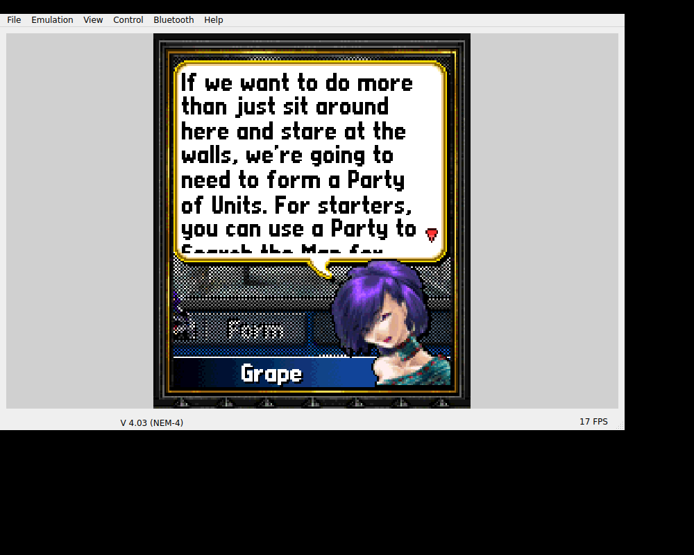

With Pocket Kingdom, we could already follow Offline Play into New Game, the Grape tutorial and the kingdom screens. The next useful question was whether we could leave and come back with the game’s own save.PK01
Save. Yes.

The original Grape tutorial and party discussion in the retained v0.1.0 Linux EKA2L1 host window. The save/restart outcome is separately recorded in PK01.
Open the image for the full original view.
PK90The original Save menu, confirmed with Yes, wrote a 10,584-byte save.dat. After the whole host process restarted, Continue returned to the kingdom. The route then reached Shop and Buy. The state came from the game’s own persistence, rather than a substitute snapshot presented as a native save.PK01
Keep the kingdom during the update.
For the later shell, we used Witcher’s presentation and Genesis’s inline-switching model around the same native SurfaceView. We kept the game’s Save distinct from SAVE REPORT. One saved the kingdom; the other saved diagnostic text.PK02
An existing readiness marker prevented an update from extracting the seed over the installed guest drives. The runtime, game-save paths and native core remained the earlier baseline. The current Activity checks deferred native boot, preserving the historical kingdom run as historical evidence.PK03PK04
We still depended on EKA2L1 and the original Nokia system ROM. Pocket Kingdom could join the collection while I kept working toward an independent runtime. Getting the kingdom back and replacing that platform dependency were separate jobs.PK05L02
About these records
The original save/restart/Continue sequence is a historical Linux host route, not battle completion or current phone acceptance. The displayed emulator window is unchanged. The later shell tests defer native gameplay and do not establish audible phone playback. Nokia platform dependencies remain explicit.
The receipts
Selected source lines, investigation notes and recorded feedback. Open a receipt for the original context and scope.
PK01 / Original Offline Play, kingdom progression and save reloadHistorical host validation record
Source: Pocket_Kingdom_Bridge_v0.1.1_PRIVATE_CHECKPOINT.zip / Pocket_Kingdom_Bridge_v0.1.1_PRIVATE/evidence/baseline-v0.1.0/VALIDATION.json · selected lines 3–30
"verified": [
"original executable loaded",
"title and Offline Play",
"New Game",
"original opening narrative",
"Grape tutorial",
"kingdom and party screens",
"numeric 5 confirm and 7 cancel",
"directional navigation",
"both softkeys map to original N-Gage menu inputs",
"original Save > Yes writes 10584-byte save.dat",
"full process restart offers Continue",
"Continue returns to original kingdom screen",
"every supplied game file is byte-identical in Android seed",
"Android APK built, aligned and signature verified",
"original Shop Buy screen reached after save reload"
],
"not_verified": [
"physical Android execution",
"S25 Ultra screen boundaries by screenshot",
"Android native audio output",
"Android Downloads report save on-device",
"Android background/resume on-device",
"full campaign",
"battle progression",
"online services"
],
"host_audio": "unavailable: cubeb stream cannot initialize in test environment without audio output",PK90 / Historical image / Pocket Kingdom: Own the WorldHistorical host capture
Source: Pocket_Kingdom_Bridge_v0.1.1_PRIVATE/evidence/baseline-v0.1.0/host_progression.png
Retained historical host output. Original emulator chrome, where present, is part of the unchanged source image. No phone capture or phone performance is inferred.
Unchanged historical image. Source member: Pocket_Kingdom_Bridge_v0.1.1_PRIVATE/evidence/baseline-v0.1.0/host_progression.png SHA-256: 5e481a63045825eb7bd69215712c65f8aede43ad87420b31ce1835659dd3192f The original Grape tutorial and party discussion in the retained v0.1.0 Linux EKA2L1 host window. The save/restart outcome is separately recorded in PK01. Scope: Historical original-game Linux host emulator window, retained as earlier evidence in v0.1.1. No battle completion, phone audio or current phone execution follows from the image.
PK02 / Witcher presentation and Genesis switching around the same native viewCheckpoint investigation notes
Source: Pocket_Kingdom_Bridge_v0.1.1_PRIVATE_CHECKPOINT.zip / Pocket_Kingdom_Bridge_v0.1.1_PRIVATE/README_FIRST.txt · selected lines 7–31
GAMEPLAY UI UPDATE Actual Wakka Bridge Gameplay UI Kit v1.1.1 source is embedded, including its cold-Activity startup fix. The Witcher gameplay screen supplies the shared presentation; Resident Evil Genesis supplies the inline switching model. A continuous square digital D-pad supports thumb sliding between directions. 5 CONFIRM and 7 CANCEL keep the original game inputs. MENU LEFT and MENU RIGHT keep the two original softkeys. The same primary actions remain available in both modes. ORIGINAL KEYPAD / D-PAD RETURN switches the bottom controls with one tap. Numeric mode retains the separate original N-Gage D-pad, 1–9, *, 0, #, both softkeys and Clear. Required game keys are never in a dialog. The same native SurfaceView stays attached and has the same viewport dimensions when switching modes. Native proportions are retained. The header shows the actual launcher icon, game title, platform, SAVE REPORT and utilities menu. Android system Back leaves gameplay through cleanup; original 7/softkeys remain separate. Backgrounding releases held input and suspends the native surface; resuming reconnects it. The kit owns touch and controller input separately. SAVE REPORT exports a real .txt directly to Downloads/Pocket Kingdom Bridge/ through the existing independent writer, without game-worker or JNI calls. Startup fault capture is installed before View construction. Reports whose Downloads export fails remain in app storage and retry with the next report; a failed export is shown as a failure. Original Save > Yes is still the game save mechanism; SAVE REPORT is diagnostic only.
PK03 / An update must not reseed the saved kingdomCheckpoint investigation notes
Source: Pocket_Kingdom_Bridge_v0.1.1_PRIVATE_CHECKPOINT.zip / Pocket_Kingdom_Bridge_v0.1.1_PRIVATE/README_FIRST.txt · selected lines 33–48
PRESERVED Package com.wakka.pocketkingdom, UID 0x101FD3DD and the original signing key. The entire runtime seed, original game assets, native EKA2L1 library and save paths are byte-identical to v0.1.0. The existing ready-v1 install marker remains; updating the APK does not reseed or overwrite the installed guest. No new game implementation, title reconstruction or simulated gameplay. VALIDATION See VERIFICATION.txt and evidence/ for this version's actual test results. Robolectric Activity tests use the real Android framework, compiled application resources and production Activity. Native guest execution is explicitly disabled in those UI tests; their input recorder checks JNI dispatch, not original gameplay. The original v0.1.0 campaign/save/reload evidence remains under evidence/baseline-v0.1.0/ and is not presented as a new on-device test. Physical S25 gameplay, thumb comfort, Android audio, Downloads export and background/resume remain device checks. No new phone run is claimed here.
PK04 / The current Activity checks defer native gameplayCheckpoint investigation notes
Source: Pocket_Kingdom_Bridge_v0.1.1_PRIVATE_CHECKPOINT.zip / Pocket_Kingdom_Bridge_v0.1.1_PRIVATE/VERIFICATION.txt · selected lines 14–42
PASS: Four tests using the actual Pocket Kingdom Activity and compiled APK resources under Robolectric Android API34: - Cold Activity creation before window decor exists, real View layout/draw, insets and stable renderer dimensions/parent during keypad switching. - JNI input recording verifies continuous thumb direction sliding, native direction codes, simultaneous touch/physical ownership, keypad switching, original softkeys/Clear/#/cancel and Android Back exiting without softkeys. - Startup View failure reaches the preinstalled fault recorder before boot; a real pending .txt survives a refused Downloads destination, and the previous uncaught handler receives the original exception once. - Production normal/keypad controls are rendered through native Android graphics and visually inspected. These are host framework renders with boot deferred, not phone screenshots or original game execution. PASS: 40 production geometry/density cases, 8,520 assertions for square D-pad, 48dp minimum key targets, separate native directions in keypad mode, no control overlap, usable viewport, and stable shared mode slot. PASS: The exact supplied v1.1.1 JAR passes all nine kit Android framework regressions with native graphics (startup, multitouch, insets, dialogs, mode switching, Back, cleanup and fault propagation). UI tests defer boot and disable/record the native JNI boundary. No game screens or guest success are simulated, and no test code is shipped in the APK. Original v0.1.0 host gameplay/save evidence is retained separately, not rerun or presented as a new physical-device result. NOT VERIFIED HERE: physical S25 launch, comfort, live game input, native audio, actual Downloads export, game saves and Android background/resume on the phone. No complete campaign playthrough or online service restoration is claimed.
PK05 / The unchanged EKA2L1 core and Nokia system ROMCheckpoint investigation notes
Source: Pocket_Kingdom_Bridge_v0.1.1_PRIVATE_CHECKPOINT.zip / Pocket_Kingdom_Bridge_v0.1.1_PRIVATE/THIRD_PARTY_NOTICES.txt · selected lines 3–9, 13–15
EKA2L1 Symbian/N-Gage runtime Copyright (c) EKA2L1 contributors. GPL-3.0-or-later. https://github.com/EKA2L1/EKA2L1 The native library is unmodified from the upstream continuous Android release. The corresponding upstream source snapshot and license accompany this checkpoint in upstream/. See upstream/PROVENANCE.json for exact commit and file hashes. EKA2L1 includes third-party dependencies; their notices/licenses are retained in [... selected excerpt ...] Pocket Kingdom: Own the World, original game code/assets: SEGA Corporation, 2004. Nokia N-Gage system ROM: Nokia. The original game and device files are separate from the bridge/runtime and are not relicensed by this document.
L02 / The ExEn push and the ongoing Nokia runtime questOwner recollection
Source: Archive-building conversation / owner explanation
Current owner explanation of motivation and ongoing work. It does not establish a completed independent Nokia runtime or a precise release chronology. The source wording is retained.
the big Exen push was in response to me pushing our all of the BREW and J2ME games lol. also Ashen and finding out about nokia games runtimes being interwined witht the game software put me on a quest to make my own nokia runtime lol im still in the process of doing it. bu tin the mean time im a stop gag like with exen.